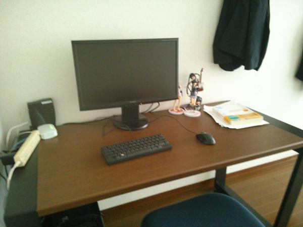

日記 - 2015-05
2015-05-07
机
引っ越すときに実家から机を持ってきたんですが、元から変な負荷がかかっていてネジ穴がおかしくなってたのをバラす時にトドメを刺してしまったらしく、新居で組み立てられないという事件がありました。それ以来ずっとダンボールを机代わりにしてたんですが、この間ようやく給与が入ったので、大塚家具に行って机を買ってきました。

大塚家具なのは単にショールームを勧められたからなんですが、社長争いのいざこざの後処理という感じで割引セールをしており、10％引きで買えました。運が良い。ただ、クレジットカードで払ったら限度額ギリギリになって使えなくなり、それまで使ってなかったカードなので枠の引き上げも拒否されたため、ネット購入ができなくなって超不便になりました。
ダンボールは低すぎて腰が壊れそうだったんですが、机を導入したことでようやく人間らしい生活環境が整ってきました。これでようやく、自宅でも身体を痛めずにPCが触れます。
あとは台所に置く棚と、本棚や戸棚がほしいですね……。特に本はダンボールに突っ込みっぱなしなので、なんとか管理方法を考えないといけないです。突っ込みっぱなしでもあまり困らなさそうだけど、そんなことを言ってると何も進まない。
ここにはかつてコメントが表示されていました